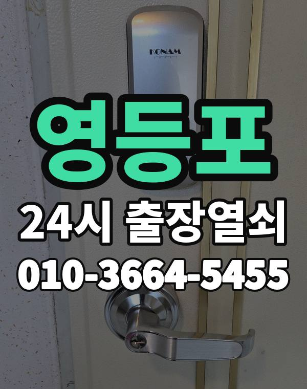

영등포 출장 다니며 보는 동네
영등포구는 여의도 사무실, 당산동 아파트, 신길동과 대림동 주택가까지 생활권이 여러 갈래입니다.
신길동은 재개발로 새 아파트와 오래된 주택이 섞여 있습니다.

영등포구 출장 가는 동네
- 영등포동
- 여의도동
- 당산동
- 도림동
- 문래동
- 양평동
- 신길동
- 대림동
영등포동 출장열쇠, 여의도동 열쇠집처럼 동네 이름으로 찾으셨어도 같은 곳입니다.
적혀 있지 않은 동네도 영등포구 안이면 다 갑니다.
영등포에서 맡기실 수 있는 일
영등포에서 전화 주실 때
여의도 건물은 출입 관리가 엄격해 건물 쪽에 미리 말해 두시면 좋습니다.
주택가는 늦은 밤에도 바로 출동합니다.
영등포역, 여의도역, 당산역, 신길역 근처라고 말씀해 주셔도 위치 잡기가 쉬워집니다.
가까운 역이나 큰 건물, 단지 이름을 같이 알려주세요.
- 정확한 주소, 아파트라면 동과 호수
- 번호판 상태 (꺼짐, 켜짐, 경고음)
- 거주 확인용 신분증이나 주소 나온 우편물
전화부터 작업까지 순서는 이용안내에 적어 두었습니다.
영등포 출장열쇠 자주 묻는 질문
영등포구 끝쪽 동네도 오시나요?
영등포동, 여의도동, 당산동, 도림동, 문래동, 양평동 등 영등포구 전 지역 갑니다. 영등포구 안이라면 동네 상관없이 갑니다.
영등포 늦은 시간 출장도 되나요?
시간 상관없이 출동합니다. 주소를 받으면 도착 시간부터 알려드립니다.
문을 못 열면 비용을 내나요?
못 열면 비용은 받지 않습니다. 비용은 작업 전에 먼저 말씀드리고, 괜찮다고 하시면 시작합니다.
세입자도 문을 열어 주시나요?
거주하시는 분인지 확인한 뒤 엽니다. 신분증이 집 안에 있으면 관리사무소 확인도 됩니다.
영등포 도어락 수리나 교체도 하시나요?
네, 합니다. 문에 맞는 제품인지 보고, 고칠 수 있으면 수리를 먼저 권합니다.